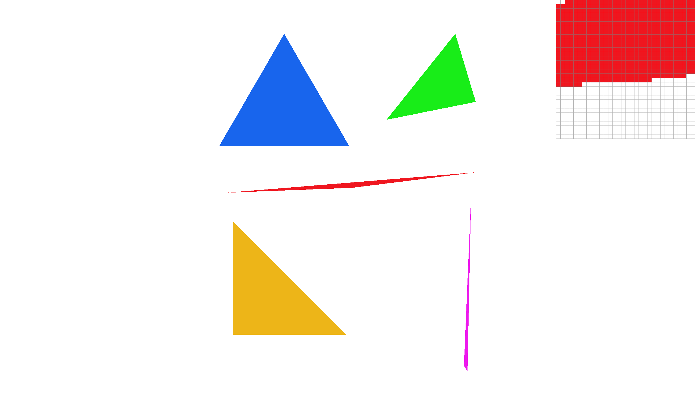
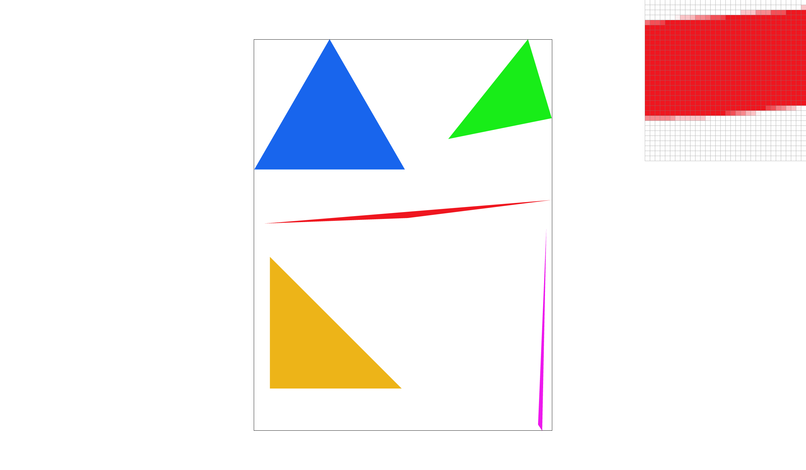
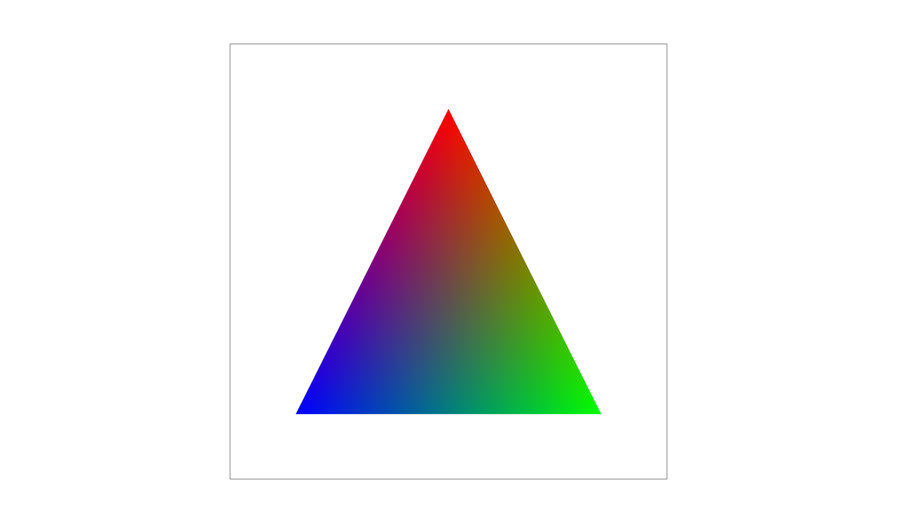
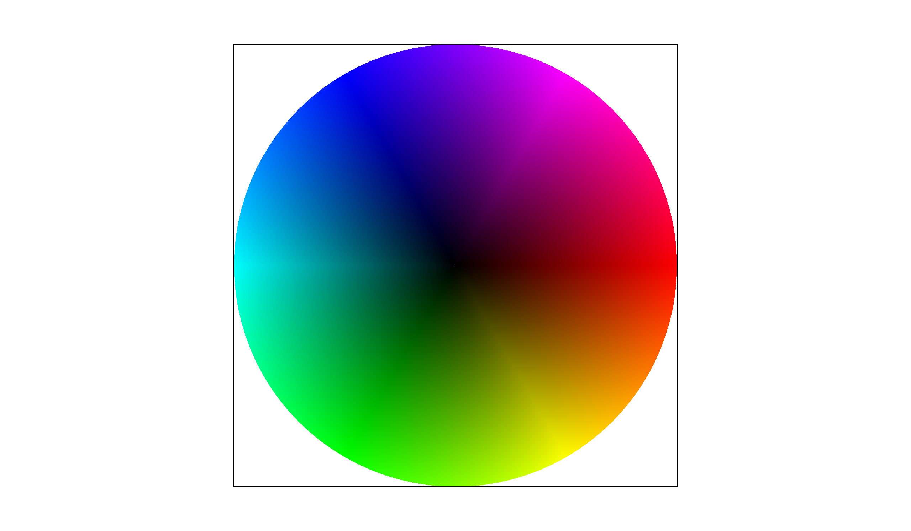
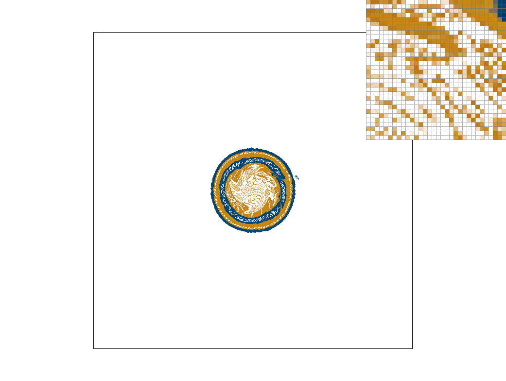
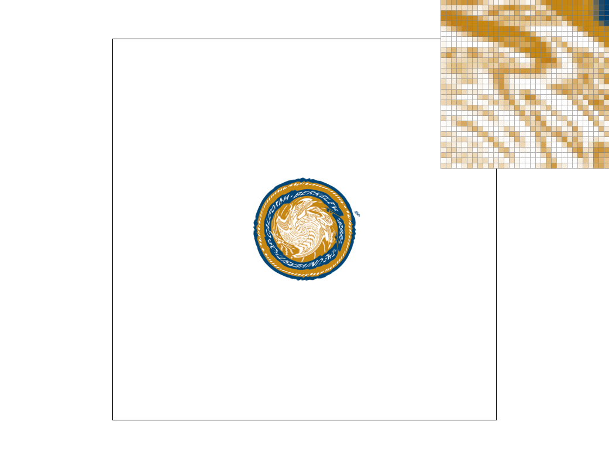
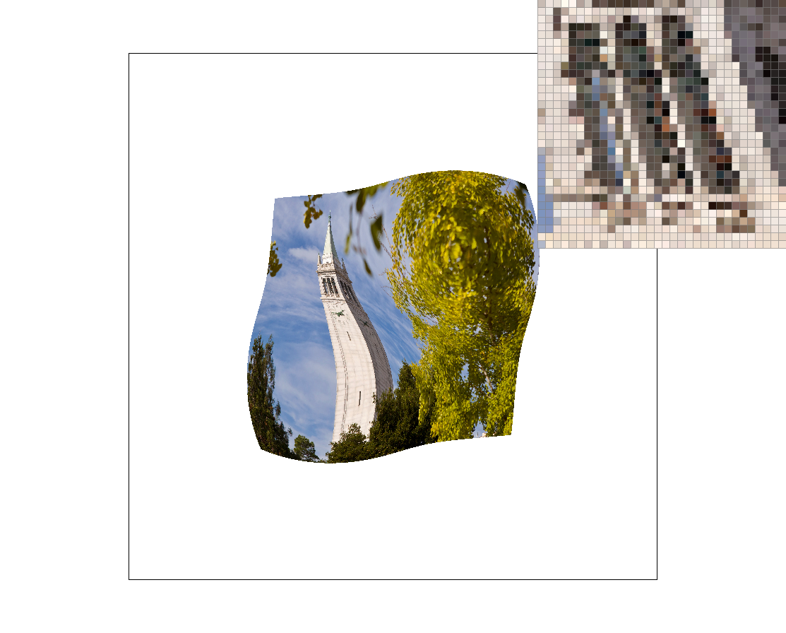
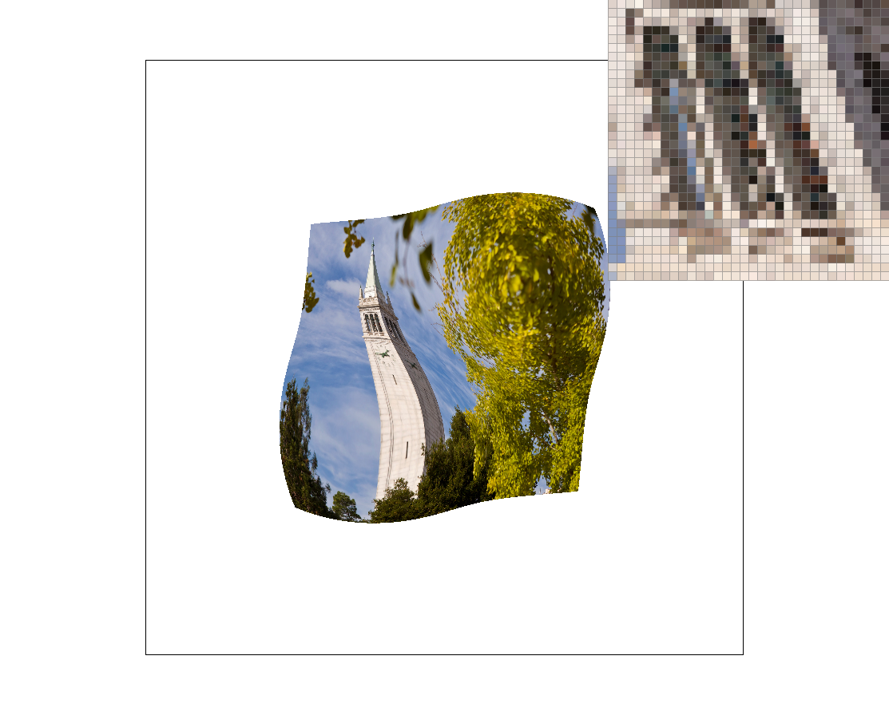

In this project, I built a rasterizer capable of generating images from .svg files by transforming, rasterizing, and rendering triangles.
To achieve this, I completed functions in rasterizer.cpp, transforms.cpp and texture.cpp.
These functions also support supersampling, which means generating a larger image and downscal it to make the image smoother.
For texture mapping, the rasterizer supports various methods of pixel sampling and level sampling.
These choices allow users to make trade-offs between speed, memory and antialiasing.
First, I calculate the minimum axis-aligned bounding box of the triangle. This bounding box is a rectangle that completely encloses the entire triangle. I determine this rectangle by finding the minimum and maximum X and Y coordinates among all the triangle's vertices. This step helps limit the area we need to check, preventing us from iterating over the entire screen.
Once the bounding box is defined, I iterate through each sample point (sub-pixel) within this rectangular area. For each sample, I need to determine if it falls inside the triangle.
Each of the triangle's three edges can be represented by a linear equation. For a point \((x,y)\) and an edge defined by points \((x_a,y_a)\) to \((x_b,y_b)\), the edge equation can be expressed as: \[ L(x,y) = (x - x_a)(y_b - y_a) - (y - y_a)(x_b - x_a) \] If a sample point is inside the triangle, the evaluated edge equations for all three edges must have the same sign. If all three edge equations yield results with consistent signs (or are zero), the sample point is inside the triangle.
If a sample point is determined to be inside the triangle, I color its corresponding location in the sample_buffer with the triangle's color. Since the code scales coordinates by \( t = \sqrt{sample\_rate} \), this indicates that rasterization is happening on a higher-resolution grid, typically for supersampling anti-aliasing.
My basic structure is using the bounding box check. Besides that, I choose the Incremental Calculation Optimization. To boost efficiency, I don't recalculate the edge equations from scratch for every single sample point within the bounding box. Instead, I leverage the linear property of edge equations. When moving from one sample point to an adjacent one (either horizontally or vertically), the change in the edge equation value is constant. For example, moving from \((x,y)\) to \((x+1,y)\) results in a constant increment in the edge equation value; moving from \((x,y)\) to \((x,y+1)\) results in another constant increment (or decrement). I pre-calculate these constant increments (\(dx\) and \(dy\)) for each edge and then update the edge equation values using simple additions during iteration. This is significantly faster than performing multiplications and subtractions for every evaluation.
Supersampling is a fundamental technique used in computer graphics for anti-aliasing, which is the process of removing jagged, stair-step appearances from edges of rendered objects. These artifacts occur because a continuous geometric primitive, like a triangle, is being approximated by discrete pixels.
sample_buffer (Data Structure):
The most crucial data structure for supersampling in my code is sample_buffer.
This is a std::vector<Color> that acts as an off-screen, higher-resolution buffer.
Its size is width * height * sample_rate. For instance, if the sample_rate is 4,
this means for every single pixel in the final width * height framebuffer,
we have 4 individual Color entries in sample_buffer.
This effectively creates a (width * samples_per_side) * (height * samples_per_side) grid,
where samples_per_side = sqrt(sample_rate).
The rasterize_triangle, rasterize_interpolated_color_triangle, and rasterize_textured_triangle functions are modified to operate entirely within this higher-resolution sample space.
x0, y0, etc.) are scaled up by t = sqrt(sample_rate). This transforms the triangle from the standard pixel grid coordinates into the sub-pixel sample grid coordinates.sample_buffer (e.g., sample_buffer[y * width * t + x] = color;). This stores the individual color information for each sub-pixel.While the triangle rasterization fully utilizes supersampling, for points and lines, the fill_pixel function simply colors all sub-samples within a given pixel with the same color. This is a simplification, as true anti-aliasing for points and lines would also involve sub-pixel accuracy, but it still correctly populates the sample_buffer.
The real anti-aliasing magic happens in the resolve_to_framebuffer() function. After all geometric primitives (triangles, lines, points) have been rasterized into the high-resolution sample_buffer, this function is responsible for downsampling the sample_buffer data to produce the final anti-aliased image in the rgb_framebuffer_target.
(x, y) of the final width x height framebuffer.sample_rate number of sub-samples that correspond to that pixel in the sample_buffer. It then sums up the colors of all these sub-samples.sample_rate. This yields the average color for that specific final pixel.rgb_framebuffer_target.Supersampling is effective for anti-aliasing because it captures more information about the geometry that falls within the boundaries of a single screen pixel. When an edge passes through a pixel:
When these sub-pixel colors are averaged, the resulting pixel color is a blend of the object's color and the background's color, weighted by the proportion of the pixel covered by the object. This smooth blend effectively blurs the sharp, aliased edge, making it appear much smoother and more natural to the human eye, thus reducing the "jaggies."
|

|
|

|
When comparing screenshots at different sample rates, especially with the pixel inspector on intricate edges like those of the rainbow stripes' thin edges or sharp corners.
Sample Rate 1 (No Supersampling): Edges will appear very jagged and stair-stepped. Each pixel will be a solid color (either the triangle's or the background's), with no blending. This is because only one sample per pixel is taken, missing sub-pixel geometric detail.
Sample Rate 4 (2x2 Supersampling): Edges will be noticeably smoother. The stair-stepping effect will be significantly reduced, and edge pixels will show a blend of triangle and background colors. The pixel inspector will reveal these pixels are the average of 4 (2x2) sub-samples, creating softer transitions.
Sample Rate 16 (4x4 Supersampling): Edges will appear extremely smooth, with virtually no visible jaggies. The image will look very crisp and realistic. This is because each pixel averages 16 (4x4) sub-samples, providing much finer color information. This high-density sampling accurately calculates the proportion of pixel coverage, leading to nearly perfect color blending and elimination of visible aliasing.
In essence: Increasing the sample rate means more sub-samples per pixel, allowing the pixel's final color to more accurately reflect the true geometric coverage. This precise color averaging effectively blurs hard edges, producing a smooth, natural anti-aliased appearance.
In my understanding, barycentric coordinates provide a powerful way to define any point P inside or on a triangle using a weighted average of its three vertices P0, P1, P2. These weights, which I'll call α, β, γ, always sum to 1 (α + β + γ = 1). For a point to be within the triangle's boundaries (including edges and vertices), all three weights must also be non-negative (α, β, γ ≥ 0). I like to think of them as "area ratios":
α: This is the ratio of the area of the sub-triangle formed by P, P1, P2 to the total area of the entire P0P1P2 triangle.
β: This is the ratio of the area of the sub-triangle formed by P0, P, P2 to the total area of the P0P1P2 triangle.
γ: This is the ratio of the area of the sub-triangle formed by P0, P1, P to the total area of the P0P1P2 triangle.
If I know an attribute's value (like color, texture coordinates, or normals) at each vertex, I can linearly interpolate that attribute to find its value at any point P inside the triangle using the same α, β, γ weights.
In my rasterize_interpolated_color_triangle function, I specifically use barycentric coordinates to smoothly blend colors across the triangle:
Calculating Coordinates:
For each sample point (px, py) within the triangle's bounding box, I calculate its α, β, γ values. I use formulas derived from signed areas; the line_eq variable represents twice the signed area of the entire triangle, acting as the common denominator for these ratios. Before I do any of these calculations, I scale the input vertex coordinates (x0, y0, etc.) by \( t = \sqrt{sample\_rate} \). This means all my calculations are happening in the higher-resolution sample space.
Interpolating Colors:
If vertices P0, P1, P2 have colors C0, C1, C2, I calculate the color interpolated_color at any point P as: Color interpolated_color = alpha * c0 + beta * c1 + gamma * c2.
This process creates a smooth, blended color gradient across the triangle's surface. Finally, I write this interpolated color to the corresponding sample in my sample_buffer.
|

|

|
Pixel sampling is a function that maps texture coordinates \((u, v)\) to a color value from a texture image (pixel-based image).
For each pixel \((x, y)\) during triangle rasterization:
Here, I choose texmap/test5.svg, because it is a complicated image with dense curves
|

|
|
|
|

|
1 sample/pixel:
16 samples/pixel:
When will the difference be obvious?Textures with abrupt color transitions.
Why?Bilinear sampling averages neighboring texel values, while nearest sampling preserves boundaries. If the texel changes rapidly, nearest sampling will cause abrupt change as well.
Level sampling uses a list of downsampled version of the original texture image called mipmaps. We choose the most appropriate level(depending on how rapid the texture coordinates change) of mipmap and pixel-sample it, filtering high frequencies that cause aliasing.
Nearest sampling is fastest but causes blocky artifacts, while bilinear sampling smooths the texture at a slight performance cost.
When using level sampling,L_NEAREST improves textures with mipmaps (using extra memory), whereas L_ZERO saves memory but may cause aliasing.
Supersampling (more samples/pixel) delivers the best antialiasing but slows rendering significantly.
|

|

|
|
|
|